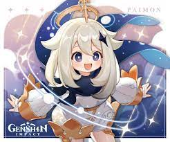

Genshin Impact - Tất tần tật về tựa game với dung lượng và đồ họa "khủng nhất"
Genshin Impact mang đến thế giới mở lý thú với đồ họa sống động, dàn nhân vật đặc sắc cùng gameplay đa dạng. Chính điều này đã tạo nên sức hút cho game PC ngay từ ngày đầu ra mắt và sau gần hai năm vẫn chưa có dấu hiệu hạ nhiệt. Cùng mình khám phá những điều hấp dẫn về trò chơi nhập vai này qua bài viết dưới đây.

1, Thông tin Genshin impact
Genshin Impact là một tựa game hành động nhập vai được phát triển và phát hành bởi HoYoverse (tên trước đây là miHoYo). Trò chơi chính thức được phát hành vào tháng 9/2020 trên nhiều nền tảng. Lúc ban đầu, nhà phát triển dự định đây sẽ là một phần trong vũ trụ Honkai Impact series. Nhưng sau những thành công nổi bật của game, HoYoverse quyết định sẽ biến đây trở thành một series độc lập.
Game thuộc thể loại thế giới mở theo phong cách anime. Trò chơi cho phép game thủ chơi miễn phí. Và họ sẽ kiếm tiền thông qua cơ chế quay gacha với những banner nhân vật và vũ khí được mở theo từng giai đoạn khác nhau.

2, Gameplay
Ngay từ ấn tượng đầu tiên, Genshin Impact đã khiến mình cảm thấy choáng ngợp bởi thế giới mở sống động. Tại đây, bạn có thể thoải mái di chuyển đến bất kỳ đâu mà không bị ràng buộc bởi bất kỳ yếu tố nào. Với một người muốn vừa chơi game chiến đấu vừa đắm chìm trong thế giới đồ họa hấp dẫn thì còn gì bằng.
2.1, Hệ thống nhân vật
Đối với một game thế giới mở, hành động đối kháng nhưng vẫn tập trung vào nội dung thì hệ thống nhân vật cực kỳ quan trọng. Đây không chỉ là những playable sát cánh cùng người chơi mà còn đóng góp vai trò vào sự phát triển cốt truyện.
Đầu tiên, hai nhân vật anh em sinh đôi đảm nhận hai vai trò khác biệt. Nếu bạn lựa chọn nhà lữ hành nam Aether thì em gái sinh đôi Lumine của bạn sẽ trở thành Princess của Abyss và ngược lại. Chính điều này đã tạo nên hai góc nhìn cũng như cảm xúc khác nhau cho các game thủ.
Ngoài ra trong chuyến hành trình của mình, bên cạnh bạn còn có Paimon đáng yêu. Một cô tiên biết bay sẽ hỗ trợ bạn hết mình trong cuộc phiêu lưu. Tuy nhiên đôi khi Paimon sẽ khá ồn ào và thường xuyên đảm nhận vai trò “nói thay” nhân vật chính. Điều này cũng kéo theo không ít ý kiến trái chiều dành cho HoYoverse.

Mỗi nhân vật đều có những đặc điểm nổi bật riêng về hình dáng, tính cách, chiêu thức. Trong đó, mỗi nhân vật sẽ có hai loại kỹ năng chính: kỹ năng thông thường và kỹ năng đặc biệt. Đối với kỹ năng thông thường, sẽ có một khoảng thời gian chờ hồi lại chiêu thì mới có thể tiếp tục sử dụng. Trong khi đó, kỹ năng đặc biệt sẽ cần tích lũy đủ năng lượng nguyên tố thì mới có thể xuất chiêu.
Ngoài ra, trong mỗi nhân vật lại sở hữu hai nhóm chính: Thiên Phú và Cung mệnh. Đây là hai nhóm quan trọng không thể bỏ qua để tăng sức mạnh cho nhân vật. Thiên phú bao gồm 6 kỹ năng với 3 kỹ năng bị động và 3 kỹ năng chủ động. Cung mệnh là hệ thống chòm sao 6 bậc.
2.2, Hệ thống kĩ năng
Tuy hệ thống nguyên tố vẫn luôn được nhiều tựa game áp dụng, thế nhưng Genshin Impact vẫn tạo nên sự độc đáo cho riêng mình. Trong game, bảy đất nước với bảy vị thần tương ứng với bảy loại nguyên tố khác nhau. Bao gồm: Phong, Nham, Lôi, Thảo, Hỏa, Thủy, Băng.
Những nguyên tố này có sự liên quan mật thiết với nhau. Điều này đòi hỏi người chơi phải chú ý đến mối tương quan cũng như phản ứng giữa từng hệ. Từ đó kết hợp các nhân vật có kỹ năng tương ứng để phát huy được tối đa sức mạnh từ chúng.

2.3, Các vùng đất mới
Khi nhắc đến những điều làm nên thành công của Genshin Impact thì đương nhiên không thể bỏ qua các vùng đất trong game. Hệ thống vùng đất trong game được chia thành 7 quốc gia tương ứng với từng nguyên tố trọng yếu khác nhau.
Mỗi quốc gia do một vị thần quản lý và hiện tại người chơi đã có dịp khám phá 3 vùng trong số 7 vùng đất. Bên cạnh đất nước của Gió, Nham và Lôi thì sắp tới người chơi sẽ được đưa đến Sumeru – đất nước của Thảo thần.
Đối với nhà lữ hành, mỗi khi đặt chân đến vùng đất mới sẽ mở khóa kỹ năng chiêu thức tương đương với nguyên tố của vùng đất đó. Chưa hết, mỗi vùng đất sẽ có rất nhiều khu vực sẽ được mở dần theo thời gian. Nhờ vậy bạn sẽ thỏa thích khám phá và không lo bị nhàm chán.
3, Tổng kết
Genshin Impact – Game anime nhập vai hấp dẫn nhất hiện nay thật sự đã thổi một làn gió mới trong cộng đồng game thủ và nhận được sự yêu thích suốt gần hai năm qua. Trò chơi không chỉ mang đến giây phút phiêu lưu khám phá mà còn có những nhiệm vụ trí tuệ vô cùng thú vị. Đồng thời bạn cũng được trải nghiệm thế giới đầy màu sắc này cùng bạn bè của mình.